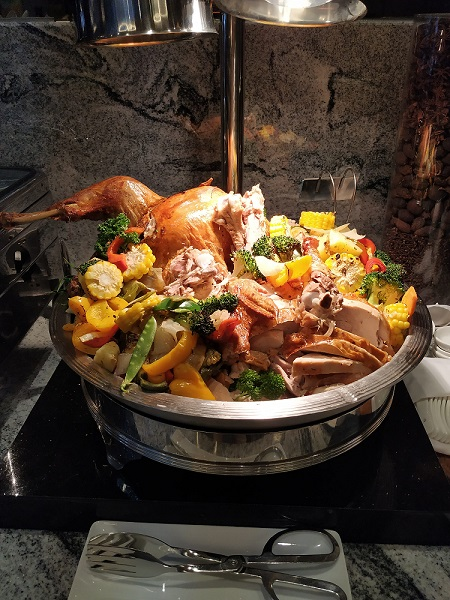
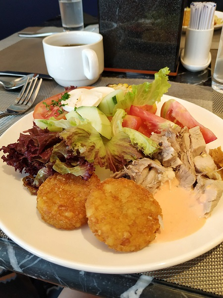
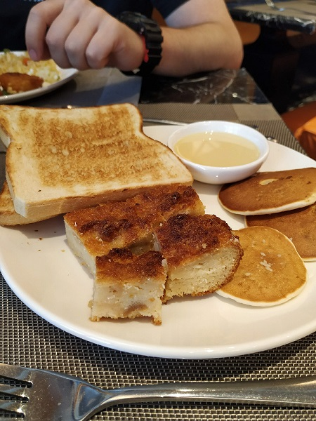
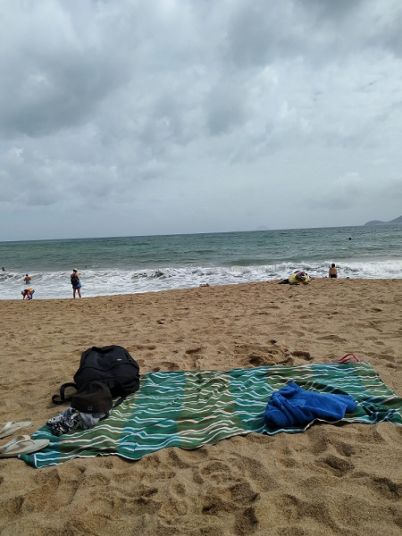
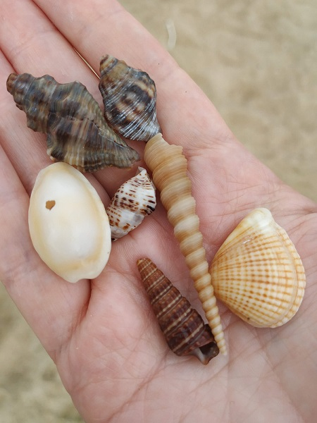
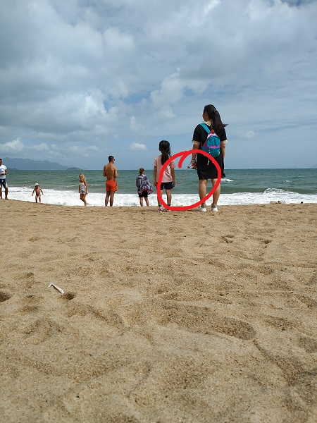
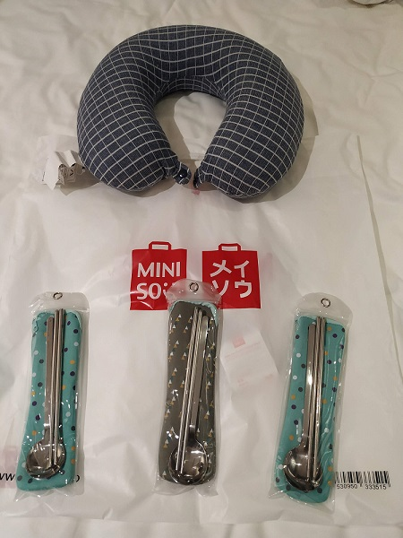
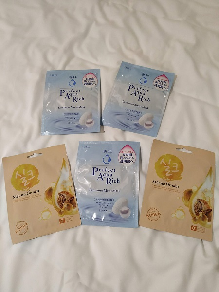
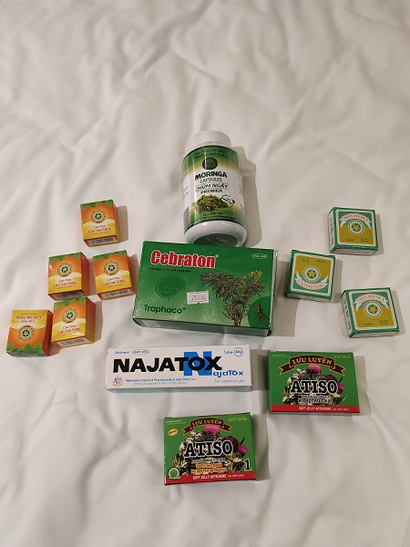

As usual we had a breakfast at a hotel, that day there was a really tasty bird... I didn't know what... a duck, but it didn't taste like it, or may be a turkey. The whole dish looked perfectly. In this time we wanted sweets: local cakes, small craps with condensed milk. Breakfasts in the hotel Erika was always tasty, good and diverse. Rounds on my plate were hash brown. Interestingly, why in Russia we don't cook hash brown. It's just a kind of fried potatoes.



It was so cool lying on the beach after a breakfast. Everybody who have visited Vietname before warned me that it is dangeros to sit on the sand because of sand fleas (I'm not sure that I wrote the name of this creatures right). But I didn't find any creatures or problems while having a rest on the sand. We took from home a mat that we bought in Sri Lanka and could lying on it together.
It was strange that despite waves there weren't any seaweeds or shells on the beach. Kostia walked long distance through the beach and found only some empty sand shells.
One more interesting thing - I saw a woman who fastened her arm with an arm of her child by a special handcuffs. The child couldn't go away frome her. I understand, it's for safety and convinience, but looked strange for us. I think in other countries people use this kind of handcuffs.



During the evening we did shopping :)) Bought some things for ourselves in Japanese shop, but for example chopsticks were made in Vietnam. Hmmmm... OK, they were not souvenirs, they were for us. Earlier I was against of iron chopsticks, but when saw them in reality changed my opinion. Will see how convinient they will be in using.
Also, I bought some masks for the face and Vietnam vitamins and creams. It is supposed to that the quality of vitamins in Vietnam is better than in our country. I understand that everything could be bought via the internet, but it's more interesting to bring gifts to home. Then, during a cold winter each vitamin will be recoll warm memories about our trip.



Summaries:
1 – A memory foam U-shaped neck pillow - 129 000 VND
2 – A portable folding mirror - 43 000 VND
3 – Three sets with chopsticks and spoons - 129 000 VND for all
4 – Five masks - 135 000 VND
5 – Vitamins and creams from a drugstore - about 675 000 VND